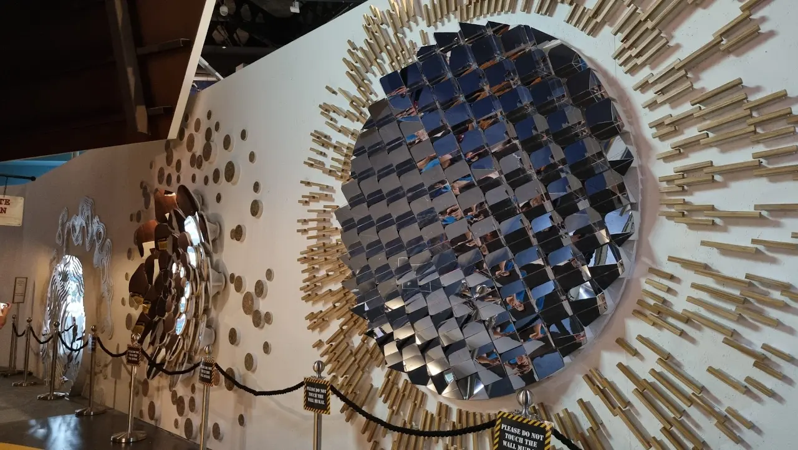
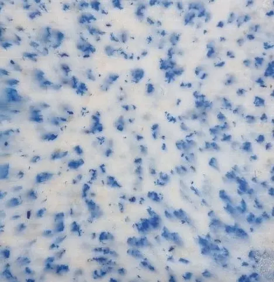
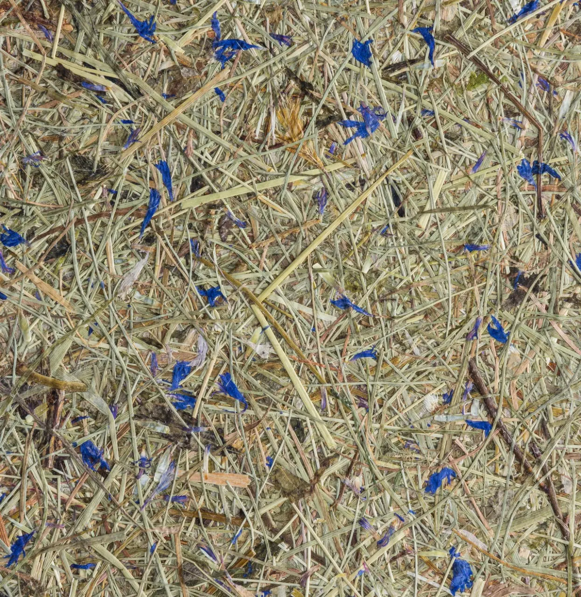
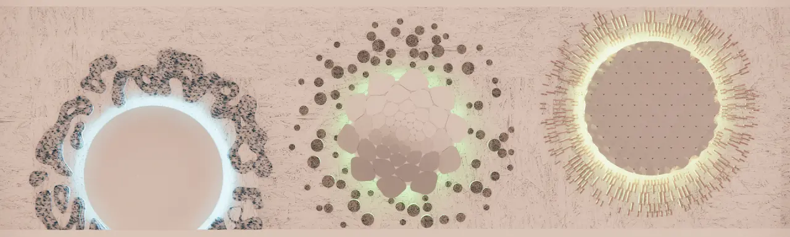

architecture
Singapore Science Centre Mural

- context
- Superstructure
- year
- 2023
- type
- architecture
This set of 3 playful mirrors is part of an exhibit in the Singapore science center. They guide the guests on a reflection of the impact of climate change on the world. The first mirror talks about the melting ice caps and the resultant rising sea levels, the second about the dwindling forest and plant population and the resultant ozone layer depletion, and the final one on the bees and the resultant threat of extinction. Made using recycled milk cartons, pressed plant laminate and recycled chopsticks. My contributions spanned through the entire conceptualisation, design, fabrication, installation and project management.



